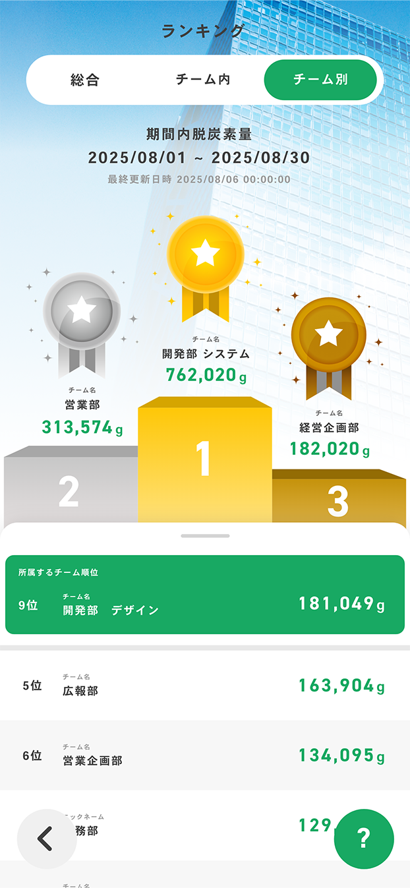
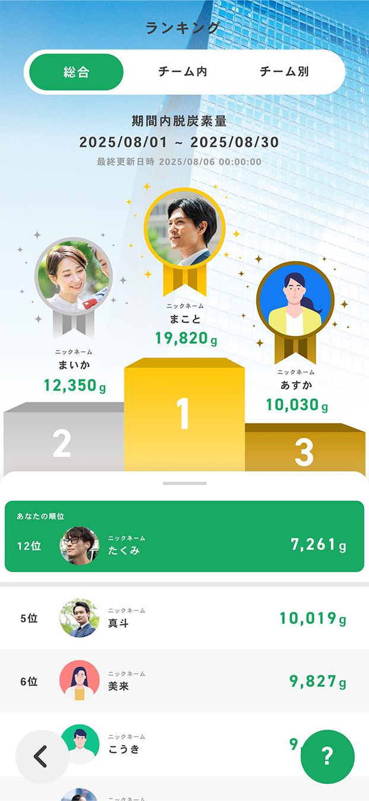

SPOBY 歩数・脱炭素量ランキング画面
制作背景・意図
- 【概要】
-
- 役割 : ユーザーが自分や他者の健康・脱炭素行動の成果を可視化し、行動そのものに価値や楽しさを見出せるようにする役割を担う画面です。
- 掲載場所 : SPOBYアプリ内 リワード一覧画面
- アプリ（SPOBY）について :
「SPOBY」は人の活動による脱炭素・健康増進を実現するアプリです。ユーザーはアプリを利用して活動を行うことでポイントを獲得でき、貯まったポイントはアプリ内に掲載されている様々なリワードと頑張ったご褒美として交換・獲得することができます。
- 【制作目的】
-
- 健康・脱炭素行動の継続理由が「リワード（物）がもらえること」に偏っていた状況を改善し、物がなくても行動を楽しみながら続けられる体験を提供することを目的として制作しました。脱炭素量という成果をランキングとして可視化することで、ユーザーが自分の取り組みを実感し、他者との比較や切磋琢磨を通じて自然と行動を継続できる状態を目指しています。
- 【背景/課題】
-
- 従来のアプリ体験では、健康・脱炭素行動を継続するモチベーションが「行動の結果としてリワード（物）がもらえること」に偏っているという課題がありました。物理的なリワードを動機としてアプリを継続するユーザーは多い一方で、リワードが得られない期間や魅力を感じにくい場合には、行動を続ける理由が弱くなってしまいます。健康や脱炭素といった本来は継続が重要な行動において、物がもらえるかどうかに依存しない、楽しみながら続けられる体験設計が不足していました。そのため、自分や他者の取り組みを可視化し、切磋琢磨しながら行動を楽しめる仕組みを設ける必要がありました。
- 【制作時に重視したポイント】
-
- 行動の成果を実感できる可視化
健康・脱炭素行動の結果を数値として明確に表示し、自分の頑張りが目に見える形で伝わることを重視しました。 - 物理的リワードに依存しない動機づけ
「順位」「ランキング」「他者との比較」といった要素を取り入れ、達成感や競争心を刺激する体験設計を意識しています。 - 楽しさを感じられるビジュアル設計
行動の成果をポジティブに受け取れるよう、ランキングという競争要素を堅くなりすぎない表現で伝えるために、メダルや装飾を用いた視覚的に楽しめるUI設計を重視しました。 - 他者比較を前提とした情報の扱い
他のユーザーの情報が表示される画面であるため、利用する企業に応じて、実写の写真アイコンではなくイラストアイコンを用いるなど、個人が特定されにくい表現を採用しています。
- 行動の成果を実感できる可視化